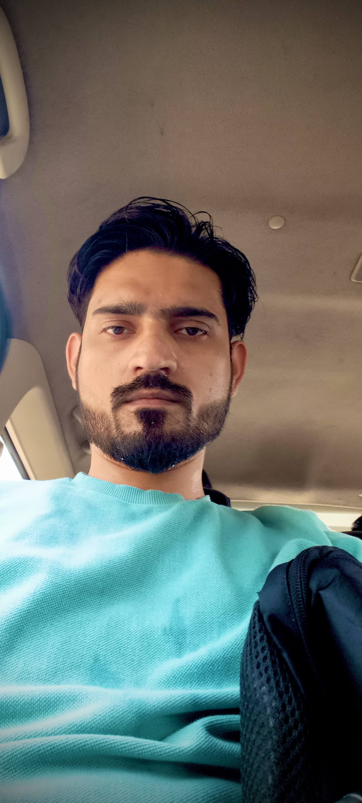

Backend-focused .NET Developer specializing in scalable, secure, enterprise-grade applications. Strong expertise in ASP.NET Core, Microservices Architecture, Real-Time Systems, Distributed Messaging, Background Schedulers, and API Integrations.
Contact MeExperienced backend developer with hands-on expertise in designing and developing high-performance systems across education platforms, service-provider ecosystems, logistics intelligence systems, healthcare management, and enterprise business applications.
I specialize in clean architecture, REST API design, real-time communication using SignalR, secure authentication, database optimization, distributed messaging with RabbitMQ, containerization using Docker, and cloud-based deployments.